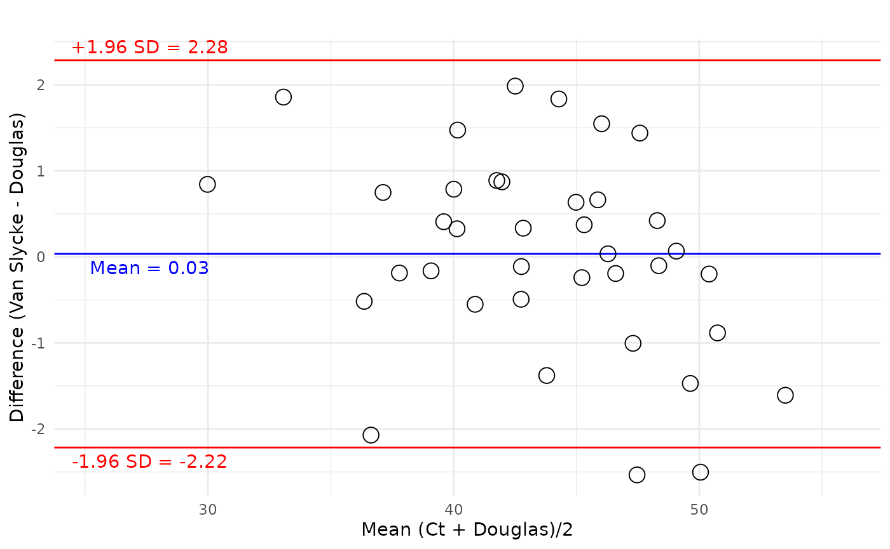
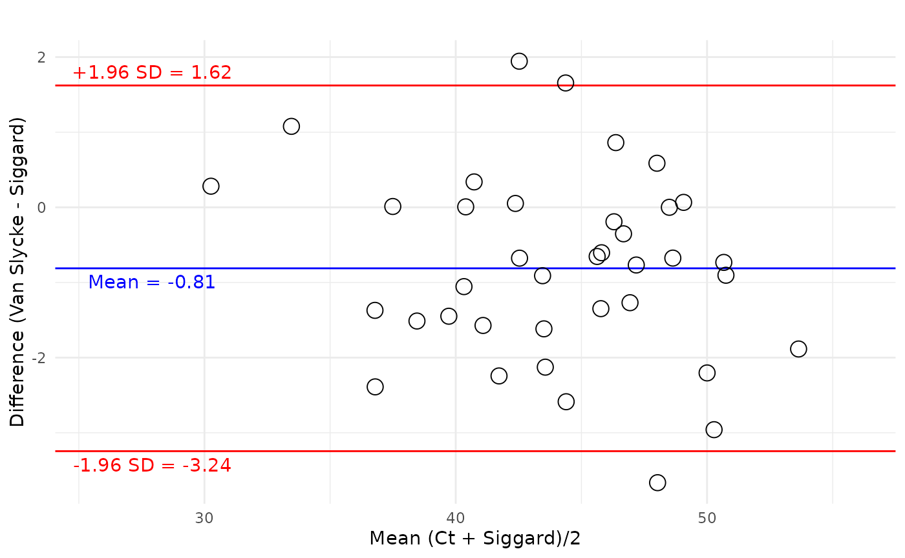
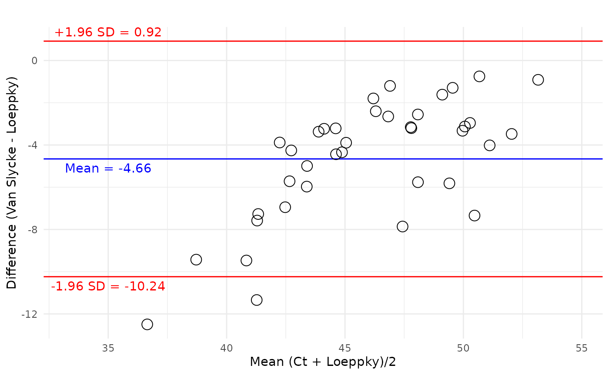

Calculating CO2 Content of Blood
B Akenzua-Sanderson
2026-05-28
co2_content.RmdIntroduction
Several canonical methods of calculating the CO2 content
in blood are described. co2ntent currently implements three
methods:
- Douglas et al. (1988)
- Siggaard-Andersen et al. (1988)
- Loeppky et al. (1983)
Using the data from Table 3 from Douglas et al. (1988), this vignette will demonstrate the calculation of the CO2 content of whole blood ()and compare each method to measured values of . Measurements wre performed using the Van Slyke method of determining total CO2 content () by vacuum extraction; releasing gases from a blood sample using acid, followed by manometric measurement.
# Calculate CO2 content via the three canonical methods
df <- co2ntent::douglas_table_3 |>
mutate(
douglas_co2_blood_ct_ml_dl = co2_content(
pco2 = pco2_torr,
ph = ph,
haemoglobin_g_dl = haemoglobin_g_dl,
so2_fraction = so2_fraction,
phase = "blood",
method = "douglas",
content_units = "ml/dL",
pressure_units = "mmHg"
),
siggaard_co2_blood_ct_ml_dl = co2_content(
# calculate hco3
hco3_mmols_l = purrr::map2_dbl(
pco2_torr,
ph,
actual_bicarbonate_content_mmol_l,
pco2_units = "mmHg"
),
pco2 = pco2_torr,
haemoglobin_g_dl = haemoglobin_g_dl,
so2_fraction = so2_fraction,
ph = ph,
phase = "blood",
method = "siggaard_andersen",
content_units = "ml/dL",
pressure_units = "mmHg"
),
loeppky_co2_blood_ct_ml_dl = co2_content(
pco2 = pco2_torr,
phase = "blood",
method = "loeppky",
content_units = "ml/dL",
pressure_units = "mmHg"
)
)Douglas method
The content of CO2 in blood calculated via the method developed by Douglas et al. (1988) is termed
bland_altman_plot(
data=df,
var_a=blood_co2_content_ml_dl,
var_b=douglas_co2_blood_ct_ml_dl,
xlab = "Mean (Ct + Douglas)/2",
ylab = "Difference (Van Slycke - Douglas)",
plot_title = ""
) +
theme_minimal()
Siggard-Andersen method
The content of CO2 in blood calculated via the method developed by Siggaard-Andersen et al. (1988) is termed
bland_altman_plot(
data=df,
var_a=blood_co2_content_ml_dl,
var_b=siggaard_co2_blood_ct_ml_dl,
xlab = "Mean (Ct + Siggard)/2",
ylab = "Difference (Van Slycke - Siggard)",
plot_title = ""
) +
theme_minimal()
Loeppky method
The content of CO2 in blood calculated via the method developed by Loeppky et al. (1983) is termed
bland_altman_plot(
data=df,
var_a=blood_co2_content_ml_dl,
var_b=loeppky_co2_blood_ct_ml_dl,
xlab = "Mean (Ct + Loeppky)/2",
ylab = "Difference (Van Slycke - Loeppky)",
plot_title = ""
) +
theme_minimal()